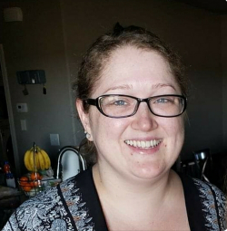

Hi, I'm Caitlin!
I'm an aspiring software developer in Haverhill, Massachusetts.
When I'm not working I like to:
- Cook up some new recipes, check out #keefecooking on Instagram to see some things I've made!
- Try craft beers - if you know of any good coffee ones let me know!
So far I've noticed some similarities between coding and cooking:
- Much like a recipe, a website can require multiple "ingredients" of code before it's complete.
- If you forget or change one ingredient it can completely change the final result.
- You can get the same end result using different ingredients.
- The options are endless with both recipes and coding.
A Little About Me
I realized at a young age that I have a passion for both learning and teaching. It's indescribable how rewarding it feels helping others.
After high school I became a Preschool Teacher for about 5 years. While I loved teaching I ended up making a career change into the office world. I spent the next 5 years working at an equipment leasing company learning everything I could about the processes and procedures for multiple departments. Before long I was creating a delinquency calendar for the collections team and creating e-mail templates for multiple departments to use, among other things.
This left me wanting to know more about the technical side of things; like the most efficient way to create and deploy the templates to the teams. What goes into creating a functional application or website. How buttons are added, updated or removed. At the end of June 2020 I enrolled as a student at Thinkful for Software Engineering and started my journey to become a software engineer!